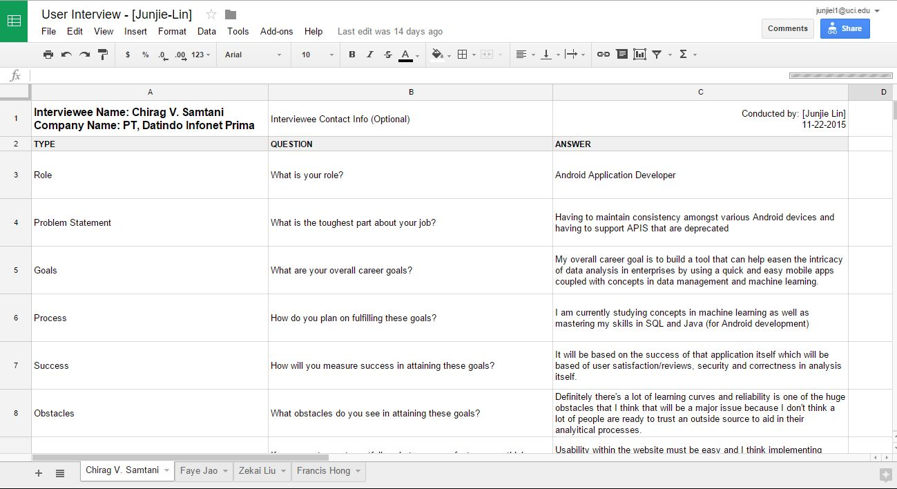
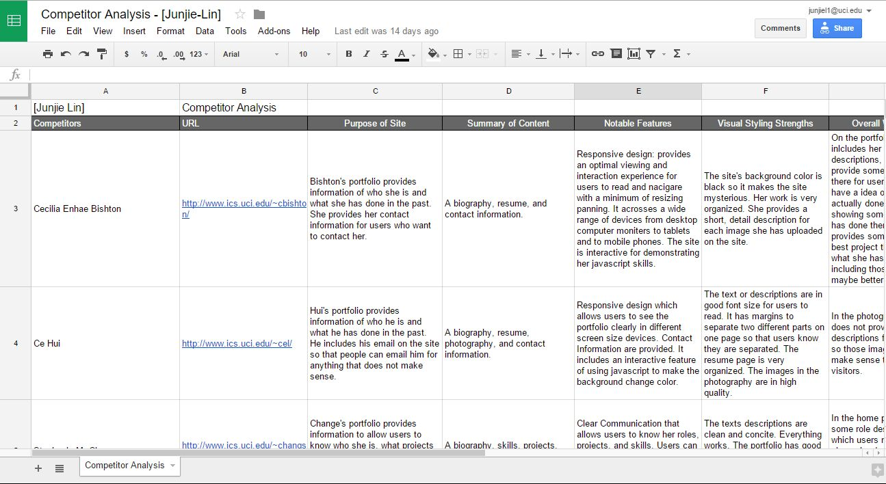
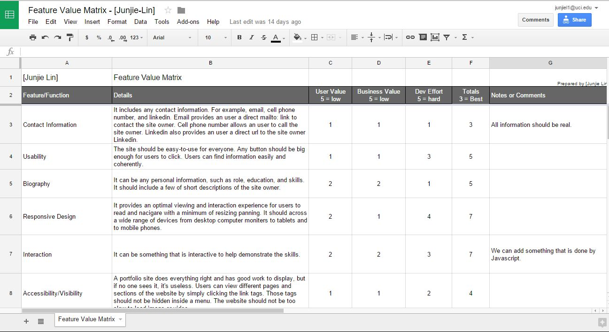
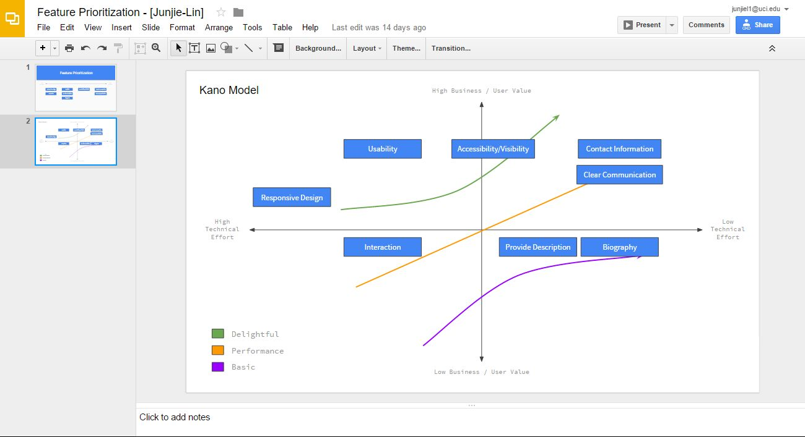
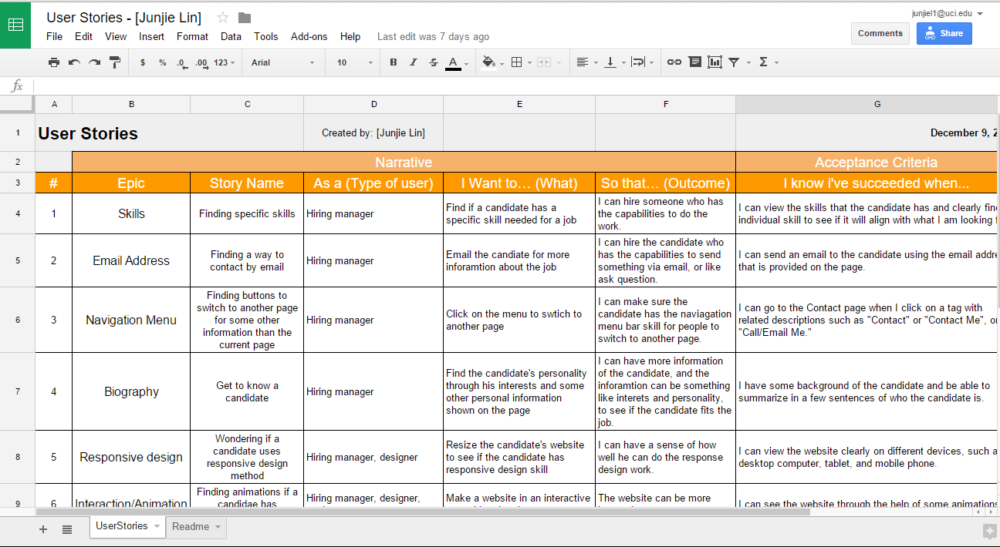
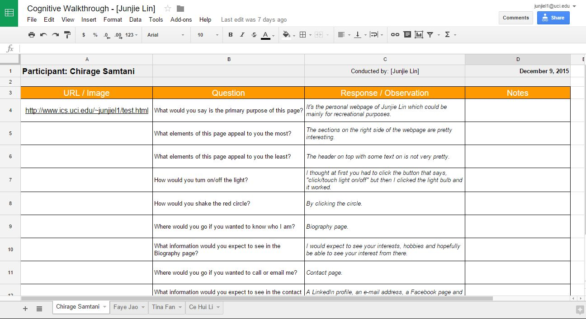
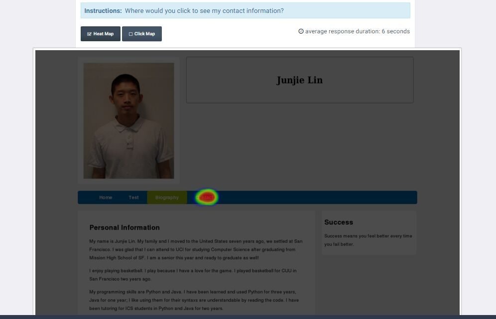

User Interviews
I interviewed four classmates who are majored in either Computer Science or Informatics.
I asked for their roles, career goals, and ways to succeed,
as well as what they look for from a portfolio website.
I received some good information of expectations and concerns of creating a portfolio website.
View User Interviews

Competitor Analysis
Looking at three of my classmates’ portfolio websites,
I could find out some notable features and strengths on their sites.
They put in some methods they have learned in class. Personally,
I felt this step is great because I could have a chance to view other classmates’
portfolio sites, learning what features they would like to put into their sites.
I also found out some weaknesses on their sites which remind me to be awarded of them.
View Competitor Analysis

Feature Value Matrix
I found and added eight features to my feature list.
As soon as I competed rating all of them by user value,
business value, and development effort, I noticed how important it should be to
implement each feature to my site. For example,
each portfolio website should always have clear and easy reachable contact information
because if a hiring manager wants to hire me by looking at my site,
they need to find at least my email address in order to contact me.
View Feature Value Matrix

Feature Prioritization
Using the Kano Model is a great way to show the priority of the features for my portfolio.
It allowed me to visualize the importance of each feature
because it can show features from low to high technical effort and business value.
View Feature Prioritization

User Stories
Writing the User Stories, I was able to view the portfolio from different
perspectives with some goals and reasons. It explains what I want to have
so that I can achieve some goals. They follow a template like “As a [type of user],
I want [some goal] so that [some reason].” For example, “As a hiring manager,
I want to email the candidate so that I can send him more information about the job.”
With the User Stories, I could ask myself whether users can succeed using my portfolio.
View User Stories

Cognitive Walkthrough
It is a usability evaluation method that I help a tester go through a version of my portfolio.
I asked a set of questions from four users
because I want to understand my site’s usability and learnability for new users.
I found that the designs are good because they competed the task smoothly
and gave me some expected answers; however, there were still some places I could improve.
View Cognitive Walkthrough

User Test
The two tests I created are click test and question test.
I made a click test by asking users of where they would go
if they wanted to see my contact information.
I created this test because I want to know how easy for new users to find my contact information.
Then I made a question test by asking users a few questions of the design on my site.
The questions were mainly focused on the navigation menu bar and the clearness of the site,
wondering if users know the purpose of each page.
View User Test Results: Click Test
View User Test Results: Question Test
After completing the User Research and User Testing, I feel that my website did the job of satisficing what the Midterm Project was looking for. However, it is not good enough to be a good portfolio of showing who I am, what I have done, and what I am working on. This website is lack of content. For example, in the Home section, I added some random stories that I found online, which they did not make sense for the page. While I was designing the website, I forgot to think about the contents I wanted to add into my website. Instead, I only think of how to make it look nice. As a result, each page did not contains much information. Additionally, because I did not know how other classmates’ websites look like, I did not know what kind of information I should have in my website. With Competitor Analysis, it solved this problem, and I analyzed what other classmates wrote on their website, like a resume or some memorable images.
During the User Testing, I found that some testers did not understand what the section Test was. It was because I have not learned the User Stories; I forgot to look at the portfolio from different perspectives. I forgot to think that new users did not have any information about me before they looked at the website. But after I completed the User Stories, I realized what happen and I should always view with different perspectives.
I plan on adding more contents to my portfolio. I would like to change the section Biography to be my Home section so that people understand who I am when they first open the page. Obviously I would delete the two stories I found online. On the new Home section, it is going to have my personal information, such as picture, background, education, interests, hobbies, and etc. This way, users can know me easily by reading my Home contents. Then if they have questions, they can click on Contact section to email me.
Secondly, I would change the Test section to be Project section. I plan on having the JavaScript work there, as well as showing some of the projects that I have done at UCI, including some images with short description of what the project is about. I would also have some projects that I am working on there. They should include some work like sketches, images, and some descriptions of what the project is about.